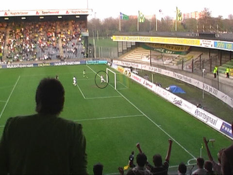

|
ADO
Den Haag - Roda JC (0-2) 14 april 2007
|
Een jonge ADO-fan met de tram op weg naar het Zuiderpark.
Twee oudere ADO-fans op weg naar het Zuiderpark.

De sfeeractie op de JK-tribune met grote portretten van spelers en een
confettikanon.
Veel geploeter en weinig hogeschoolvoetbal. Roda heeft nog het meest balbezit en
is hier gevaarlijk met een fraai indraaiend schot van Agustien in de
rechterbovenhoek.
Doelman Sergio Sanchez weet met een goede reflex een doelpunt te verijdelen.
ADO krijgt de beste kansen zoals hier, maar Lachambre verdedigt knap.

De supporters van ADO juichen al als Kolk, Kujovic omspeelt en de bal het doel
in
lijkt te schuiven. Echter Lachambre weet de bal nog net voor de doellijn weg te
werken.
Hij raakt daarbij geblesseerd aan een hand maar kan gelukkig doorspelen.
Vrije trap Roda genomen door De Fauw. Hij schiet de bal strak in de rechtse
benedenhoek.
Zo is het al snel na rust 0-1, (48').
Martha maakt hands. Hij krijgt een gele kaart en Roda krijgt een strafschop.
De kleine groep meegereisde Rodasupporters zoekt stelling. Het FP boycotte deze
wedstrijd vanwege de C-status die er op rustte.
Marcel Meeuwis stuurt de doelman naar de verkeerde kant: 0-2, (59').
Er volgen al gauw dreigende spreekkoren naar het bestuur.
Ruim voor tijd vertrekken al veel supporters.
Uit een wanhoopsoffensief perst ADO nog enkele gevaarlijke momenten zoals deze
reuzen-scrimmage. Roda blijft vrij eenvoudig overeind en wint met 0-2.
De trend schijnt tegenwoordig "hinsetzen" te zijn.
Nah, prima, als jullie dat leuk vinden....
In het meest armzalige spelershome van alle clubs die er zijn is deze barak wel
het
dieptepunt. Van Tornhout en De Jong spelen een partijtje darts.
Over twee jaar komt Jan Konijn met zijn betonknipschaar. Het Zuiderparkstadion
is
dan historie. ADO krijgt het mooiste stadion van de eerste divisie want ja, na
het
verlies van Excelsior tegen RKC is Den Haag nu definitief gedegradeerd.
FC Groningen is hier volgende week de laatste tegenstander. Als actie is
aangekondigd dat men het stadion in de brand wil steken.
© Koempels Pleasure Dome
|